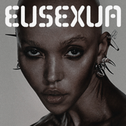
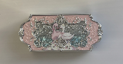
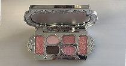
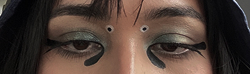
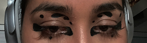

I started doing my makeup in high school, but really experimented with it during COVID. It helps me feel ready for the day & serves as a creative outlet. I love elevating my looks with rhinestones, graphic liner, & glitter shadows.
Top Songs on Repeat
Watching TV - Magdalena Bay
*insert audio player*

Eusexua - FKA Twigs
*insert audio player*
White Mustang - LDR
*insert audio player*
Favorite Palettes
The Neutrals Matte Palette
My everyday makeup palette—highly recommend! It's on the pricier side, but the formula is amazing and blends seamlessly.
Industrial 2.0 Palette
My most expensive palette but it is HIGHLY worth it for glitter enthusiasts. It’s hard to find glitter that’s smooth and gentle on the eyes!


03 Pink Swan Palette
This palette is so aesthetically pleasing, and honestly, I bought it because I love swans. The shadow formula is amazing as well!
Makeup Looks by Me


Graphic Liner
I love graphic eyeliner and symmetry in makeup, often drawing inspiration from Rorschach inkblots or patterns on insects.
Glitter & Rhinestones
A little sparkle can elevate any look. When my makeup feels incomplete, I always add glitter or rhinestones or both!